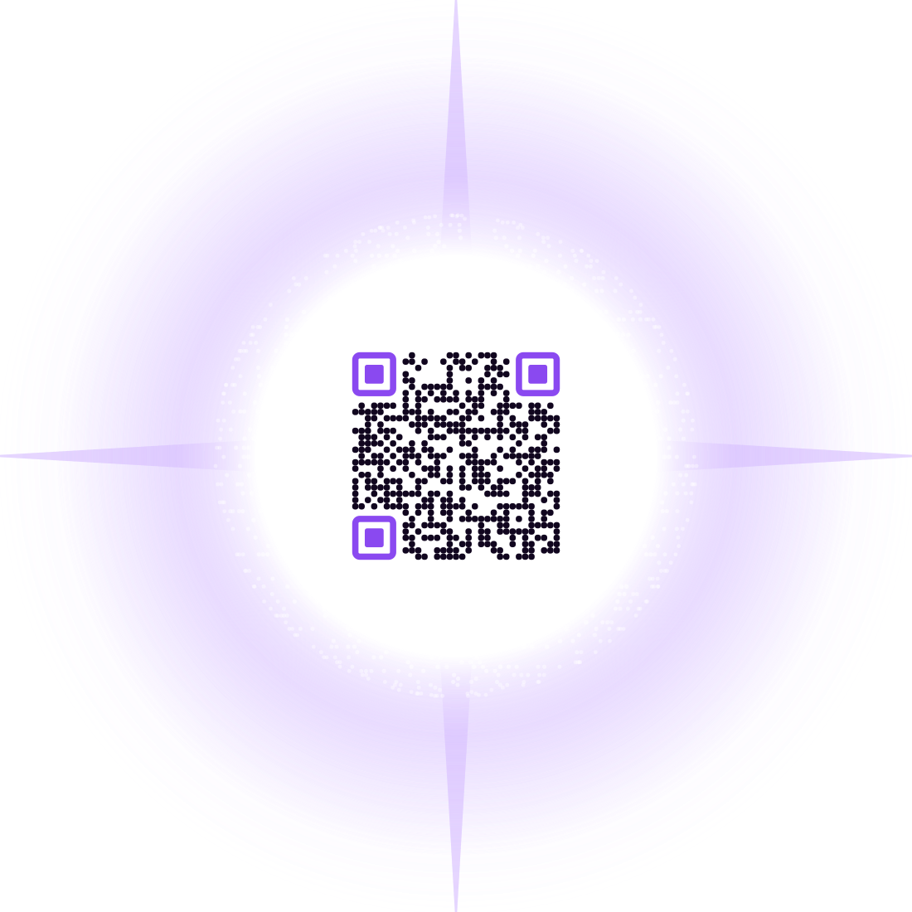
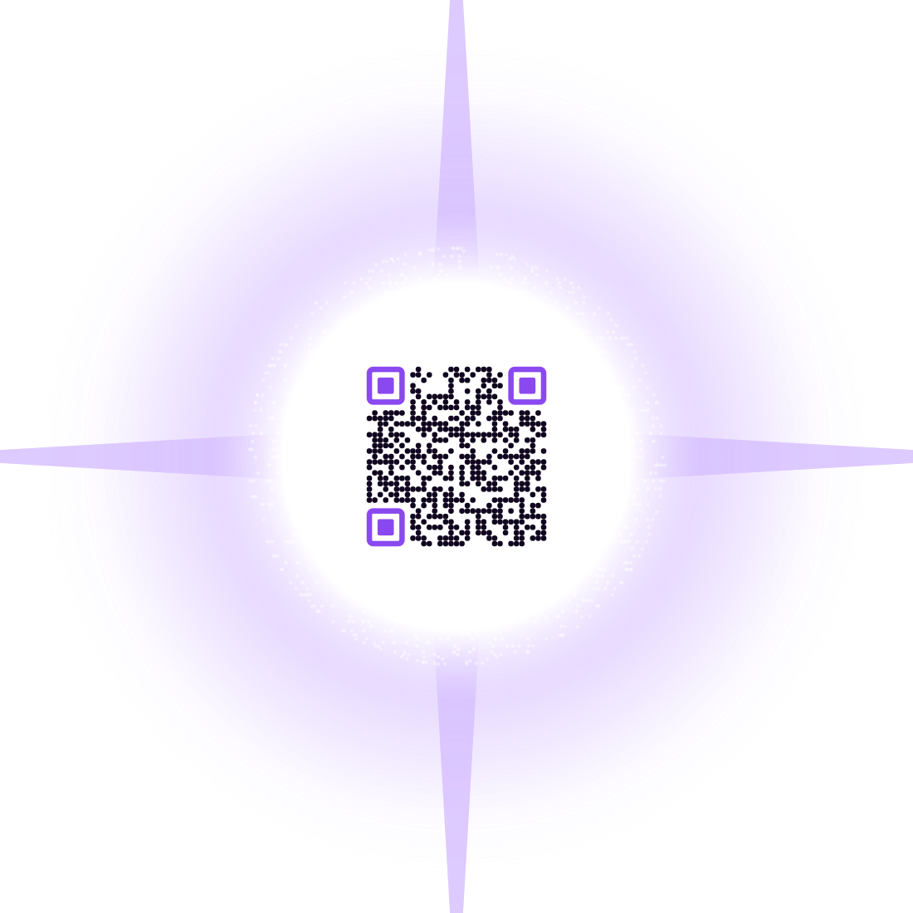
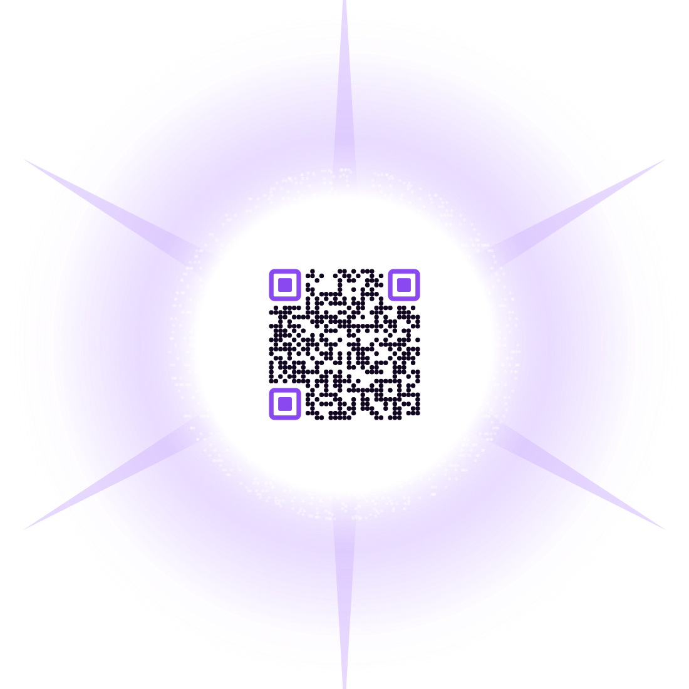
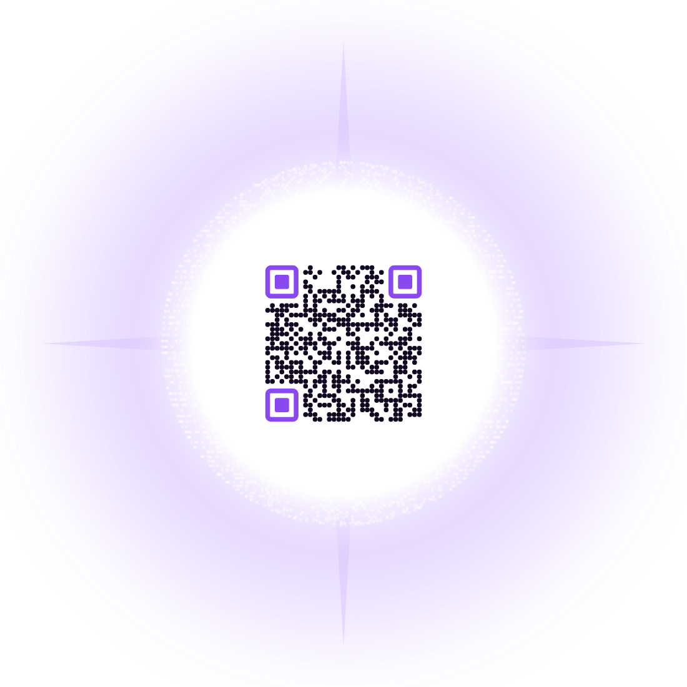
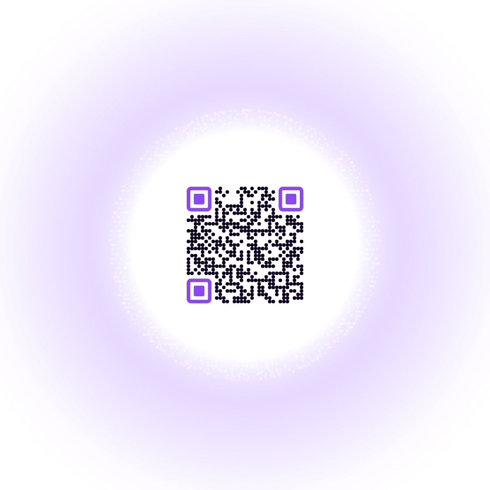

A star first, a code second. The disc versions read as a sticker because they stop at a hard rim. A star has no rim.
The trick is that the light the code sits on and the light that makes it a star are the same light: the core is opaque white where the code needs contrast, then falls off through a corona into the background. There is no edge to notice. Scan each one — they all point at the Void's Horizon page.
All on black, no panel, rendered on transparency so the garment is the background. Spikes use the same four-point geometry as the sparkle stars already in the artwork.





Two mechanical things, both worth knowing if these get tweaked later. The opaque core has to reach past the square’s corners — the code is inscribed, so its corners sit at exactly the core radius, and a gradient that starts falling off any earlier bleeds contrast straight out of the three finder patterns. And the corona modules fade in over three modules as they leave the code, so the texture dissolves into the glow rather than butting against it. First attempt got both wrong and scored 1/6 across the board.